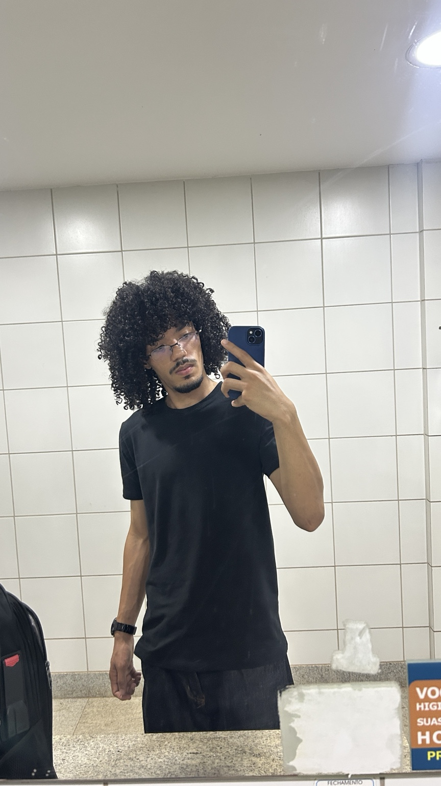

EXPERIÊNCIA PROFISSIONAL1 ano
Consultor Financeiro
Consigneto Soluções Financeiras
Atuação com consultoria financeira e empréstimos consignados, desenvolvendo experiência no relacionamento com clientes e na apresentação de soluções financeiras.
Olá, eu sou
Construindo minha trajetória na tecnologia com curiosidade, dedicação e vontade constante de aprender. Transformo desafios em oportunidades de evolução.

Sou Sidney Santos Neponeceno, estudante de Engenharia de Software na UDF e alguém movido pela busca de novos conhecimentos.
Minha trajetória profissional também me proporcionou experiências com atendimento ao público, comunicação e consultoria financeira. Essas vivências contribuíram para desenvolver minha capacidade de lidar com pessoas, compreender necessidades e buscar soluções.
Atualmente, direciono minha dedicação para a área de tecnologia, desenvolvendo minha base em programação e construindo projetos para colocar o conhecimento em prática.
Tecnologias e ferramentas que venho estudando e utilizando para ampliar minha base técnica.
Estruturação de páginas web
Estilização e layouts responsivos
Lógica e interatividade
Componentes e responsividade
Fundamentos de programação
Fundamentos de banco de dados
Word, Excel e PowerPoint
Conhecimentos de edição de imagem
Os itens representam conhecimentos e estudos informados; não indicam, por si só, certificação ou domínio avançado.
Atuação com consultoria financeira e empréstimos consignados, desenvolvendo experiência no relacionamento com clientes e na apresentação de soluções financeiras.
Atendimento ao cliente e suporte relacionado a empréstimos consignados, com foco em comunicação, orientação e atendimento das demandas apresentadas.
Projetos acadêmicos desenvolvidos durante minha formação em Engenharia de Software. Esta área será atualizada com os títulos, descrições e repositórios dos trabalhos.
Site temático sobre Halloween e Dia do Saci, com navegação responsiva, carrossel, cards informativos, curiosidades interativas e uma lista de atividades com barra de progresso dinâmica.
Visualizar projetoEste espaço fica reservado para apresentar outro trabalho acadêmico assim que ele estiver pronto para entrar no portfólio.
Adicionar projeto futuramenteOs cartões acima são modelos de apresentação, não projetos já publicados. Vamos substituir os textos e tecnologias conforme seus trabalhos reais.
Graduação em andamento. Estudos voltados aos fundamentos da computação, programação e desenvolvimento de software.
Conclusão em 2021.
Operador de microcomputador, digitação, Windows, Word, Excel, PowerPoint, Access, Outlook, Photoshop e internet.
Formação preparatória nas áreas bancária e administrativa. Formação preparatória nas áreas bancária e administrativa.
Estou aberto a oportunidades, conexões e novos desafios que contribuam para meu desenvolvimento profissional.
Entre em contato